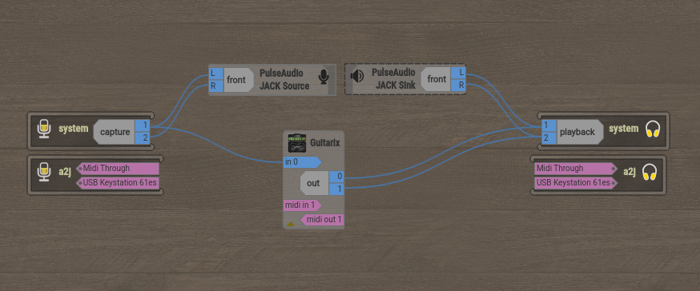
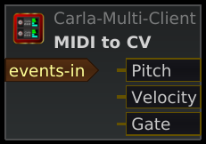
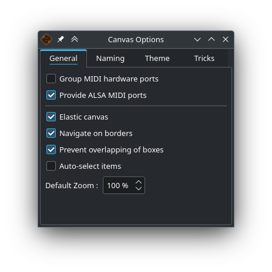
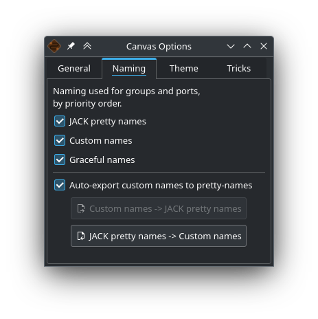
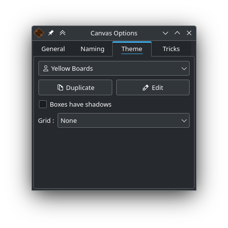
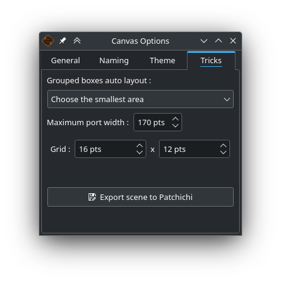

Overview

This is what your patchbay can look like. Here there are 7 boxes:
-
a system box with your ports corresponding to the hardware inputs (microphone, guitar…)
-
a system box with your ports corresponding to the hardware outputs (headphones, speakers…)
-
an a2j box with your ports corresponding to the MIDI hardware inputs
-
an a2j box with your ports corresponding to the MIDI hardware outputs
-
a PulseAudio JACK Source box
-
a PulseAudio JACK Sink box, sound from firefox and all non JACK applications comes from theses ports
-
a Guitarix box
Here A2J and pulse2jack bridges are launched.
You notice that 4 of these boxes are surrounded by a decoration (2 system and 2 a2j), these are the boxes that contain the hardware ports (your audio interface, your USB piano, any controller…).
Some audio ports are grouped into subgroups, which we will call portgroups. These portgroups are mostly stereo pairs automatically detected by the port names. This is the case here for :
-
system:capture 1/2
-
system:playback 1/2
-
PulseAudio JACK Source:front L/R
-
PulseAudio JACK Sink:front L/R
-
Guitarix:out 0/1
These portgroups facilitate the connections and allow a better general readability.
The blue curved lines correspond to the audio connections. You can observe that :
-
hardware input audio ports are connected to PulseAudio JACK Source.
-
the PulseAudio JACK Sink ports are connected to the hardware outputs
-
only the first port of system is connected to the input (in 0) of the Guitarix software
-
the audio ports of Guitarix are connected to the hardware outputs
Make and break a connection
You can establish a connection between 2 ports as long as they meet the following conditions:
-
the ports are of the same type (you can’t connect an audio port to a MIDI port)
-
one is an input port, the other is an output port
Intuitive Method
To connect or disconnect two ports, click on a port without releasing the mouse button, drag the cursor to the desired port and release the mouse button.
Alternative method
Right click on a port, it will display a drop down menu, choose Connect then the desired port. Click elsewhere to make this menu disappear. The advantage of this method is that it allows you to quickly connect a port to several others, the menu remaining displayed during the connections.
Options
Right click anywhere on the patchbay to display the menu. This menu is also present in the RaySession menu (Patchbay menu). It will allow you to :
-
switch the patchbay to full screen
-
Find a box with its name
-
Filter ports: show only AUDIO, MIDI, CV ports or all of them
-
adjust the zoom level
-
refresh the canvas: ask JACK again for the list of existing ports and their connections
-
Manual: show this manual in the web browser
-
Canvas Preferences: display a window of options
All changes in this window take effect immediately. Hover over the boxes to see the tooltips.
Shortcuts you should know
-
A double click anywhere switches the patchbay to full screen.
-
Ctrl+Mouse Wheel allows you to zoom in/out.
-
Alt+Mouse wheel allows to move the view horizontally.
-
The wheel button is used to move the view
-
Ctrl+middle mouse button cuts all connections passing under the cursor
-
Ctrl+F allows to search a box with its name
Burst Connections
It is possible to connect a port or a portgroup to different ports quite quickly. You just have to end your connections with a right click. A video will be much more explicit.
Here we want to connect the multiple outputs of Hydrogen to the Jack-Mixer tracks. In the video the blue circles appear with a right click.
Passing connections from one port to another
Sometimes it is less tedious to switch connections from one port to another than to undo and redo everything. To do this, start from the port that contains the connections and act as if you wanted to make a connection, but go to the port to which you want to switch the connections.
-
This only works if the destination port does not contain any connections
-
It works from port to port or from portgroup to portgroup but not from port to portgroup
In this video we have a rather complex case where the source is plugged into 3 Band Splitter. The bass and treble (Output 1 and Output 5) are sent directly to EQ6Q Mono while the midrange (Output 3) goes through the distortion GxTubeScreamer first. We want to insert the Dragonfly Room Reverb before the EQ6Q Mono equalization.
Note that with the right-click connection and the switching of connections from one port to another, it is very quick to integrate a new plugin in a chain, as here where we plug Plujain Ramp Live between Dragonfly Room Reverb and EQ6Q Mono.
Special ports
A2J or Midi-Bridge ports

The MIDI ports provided by the A2J (Alsa To Jack) bridge (or Midi-Bridge with Pipewire) have a hole at the end to identify them. Their real name is a long name, but that’s about the only thing that differs from the other MIDI ports.
Control Voltage ports (CV ports)

Control voltage ports, commonly called CV ports, work like regular audio ports, however, they can control one or more parameters with much more precision than MIDI ports. As their stream is not meant to be listened to, it is not possible to simply connect a CV output port to a regular audio input, as this could damage your headphones, your speakers, and maybe even your ears.
If you still want to do it, right click on one of the ports, then Connect, then the DANGEROUS menu.
You can’t say you weren’t warned, and it’s almost impossible to do this by mistake.
On the other hand, connecting a classic audio output port to a CV input port is perfectly possible, no problem.
Edit Theme
You have the possibility to modify theme colors, it is quite easy and fast to do.
For more informations, read how to edit themes.
Canvas Options
You can access to this dialog window with a right click anywhere in the canvas and Canvas options.
General Tab

-
Group MIDI hardware ports: Hardware MIDI ports are those provided by the A2J (ALSA to JACK) bridge or by Pipewire MidiBridge. The actual names of these ports begin with either
a2j:orMidiBridge:, by grouping them, you keep all these ports in the same box (nameda2jorMidiBridge). If you ungroup them, there will be one box per ALSA client (ALSA is the Linux kernel module that communicates with your MIDI hardware). -
Provide ALSA MIDI ports: Some audio programs can communicate directly with ALSA ports (created by the kernel) rather than with JACK MIDI ports (created by A2J or PipeWire). These ports transmit their data without applying JACK’s latency (which can be an advantage or a disadvantage). In most cases, these ports are not necessary, beginners will not need them.
-
Elastic canvas: Always resize the scene to its minimum content. This optimizes the view after every addition, deletion, change, or movement of a box. If you uncheck this box, the scene will keep getting bigger and bigger, and you might end up searching for your boxes in the middle of nowhere.
-
Navigate on borders: When connecting, moving, or selecting boxes, the view moves when the cursor is near the edge. There’s no need to use the mouse wheel, press Shift, or move the scroll bars. This has absolutely no effect when the scene is fully visible in the view.
-
Prevent overlapping of boxes: When this option is enabled, boxes are automatically moved when another box is placed on top of them. Uncheck this box if you enjoy searching for boxes hidden behind others, or if doing so helps you avoid a bug (which you have reported, of course).
-
Auto-select items: Highlights boxes, ports, and portgroups when you hover over them with the mouse. This can help you identify certain connections more quickly.
-
Default Zoom: The size of the elements is a matter of personal preference and visual comfort, so it depends largely on the size and resolution of your screen. Right-clicking on the zoom slider will return you to the default zoom level.
Naming Tab

Boxes and ports can be named based on several pieces of information:
-
the actual name provided by JACK or PipeWire
-
the graceful name that HoustonPatchbay can assign based on the client’s name, by removing unnecessary parts of the actual name to improve readability. For example, you can tell an input port from an output port by their shape, there’s no need for them to contain
inputoroutput -
the custom name is the name that will be used when you rename an element. In RaySession, these names may vary depending on the current session.
-
The JACK pretty-name, which is metadata assigned to the client or port in JACK (or PipeWire). This metadata can be written by RaySession, Patchance, the relevant JACK client, or even any other program that uses JACK.
If you want to see all the actual names of clients and ports, you’ll need to uncheck the three boxes labeled JACK pretty names, Custom names, and Graceful names. Otherwise, you can access this information by right-clicking on a client or port and selecting Get Info.
-
Auto-export custom names to pretty-names: When this option is enabled, all custom names (created by renaming boxes and ports) will be passed along in JACK’s metadata and will become accessible to programs that use JACK. For example, if you rename your hardware input ports, those inputs will be renamed in Ardour, which can be convenient and useful.
This option is not enabled by default because the program could conflict with another instance of the same program or with any other program that behaves similarly (all applications can write to JACK’s metadata). Also, it will not work if another instance of Patchance or RaySession is already using it on the same JACK server.
Even when this option is enabled, a pretty-name may be provided by another program and not saved among the custom names. Normally this isn’t a problem, it’s very likely that the program will rewrite the pretty-name when you reopen it. If you don’t like this pretty-name, rename the element in the patchbay, and the patchbay should be able to rename it after it disappears and reappears. Technically, HoustonPatchbay writes the metadata at least 200 ms after the port appears, it’s usually during this timeframe that the program registering the JACK port provides the pretty-name metadata (which may be overwritten).
-
Custom names → JACK pretty names: Export custom box and port names to the JACK metadata for clients and ports. This option is grayed out if automatic export is enabled, or if there are no custom names.
-
JACK pretty names → Custom names: Import the JACK pretty names into the custom names. This option is grayed out if there are no JACK pretty name that is different from the custom name.
Theme Tab

Theme Selection Box: Choose the theme you like. The presence of the user icon means that the user has permission to modify the theme folder location.
-
Duplicate: Copy the current theme so you can edit it, giving it a different name. The theme will be duplicated in the hidden folder
~/.local/share/{PROGRAM}/HoustonPatchbay/themes, where {PROGRAM} can beraysessionorpatchance. -
Edit: Open the
theme.conffile in your text editor, the button will be grayed out if the user does not have permission to edit that file. -
Boxes have shadows : A simple aesthetic rendering option that uses a small amount of resources.
-
Grid: Displays a grid in the background of the scene. The size of the rows and columns depends on the grid size defined in the Tricks tab and the minimum grid sizes specified in the theme file.
Tricks tab

This tab could have been called Miscellaneous or even Misc., but it reflects the current management trend of using more positive language. With a name like Tips, you don’t feel like you’re wasting your time here, when in reality…
-
Grouped boxes auto layout : This option applies only to boxes that contain both inputs AND outputs. There are two possible ways to arrange these boxes:
-
in a wide layout:

-
in a tall layout:

This is a setting for the automatic layout (default). Some people much prefer wide boxes, but there are cases where a tall box saves a tremendous amount of space, for example, when there is only one input port and ten output ports. The multi-choice box is actually a dosing:
-
Choose the smallest area: The boxes will be just as likely to be tall as they are to be wide.
-
Prefer wide boxes: The tall layout must offer a significant advantage to be chosen
-
Almost only wide boxes: All the boxes will have a wide layout, unless a tall layout offers a clearly obvious space-saving advantage
-
Force wide boxes: For those who can’t stand the tall layout
-
-
Maximum port width: Some programs generate veeeery long port names, so these names will be truncated if they exceed the specified number of points to prevent the box from becoming too large.
-
grid: Set the width and height of the grid in points. The larger these values are, the easier it will be to align the boxes vertically and horizontally, and the larger the boxes will be—slightly larger than necessary.
-
Export scene to Patchichi : Saves the contents of the patchbay in a JSON format readable by the Patchichi software. This allows you to send the current configuration to the developer in the event of a bug. It is also possible (though not that straightforward) to adjust the positioning of the boxes in Patchichi when you don’t have access to the hardware, though very few people will ever need to do this.